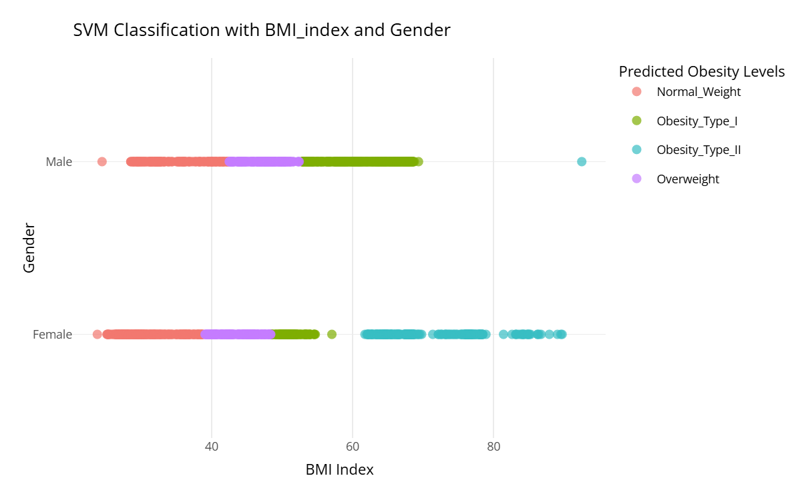

Analysing Obesity levels Based on various factors
Introduction
Obesity is a chronic disease that occurs when the body stores too much fat, which can lead to a negative impact on health (From, 2017). Obesity is an increasing, global public issue in the modern world. The data is taken from the open-source platform from OpenML. The dataset is about how various factors affect the obesity levels. In this project, we explore the obesity dataset and analyse the information and influencing factors of obesity levels among individuals based on various physical and lifestyle attributes. In the dataset we have fifteen independent variables to determine obesity levels for an individual. The dataset has important columns like height, weight, obesity level, vegetable consumption, and more. To achieve this we have used significant patterns and relationships within the data, addressing anomalies and trends. The results of this project are expected to provide meaningful insights on the key factors that contribute to obesity.
About the Dataset
The dataset used in this study is the obesity and factors affecting the obesity. It’s taken from the open-source platform OpenML. The dataset is information related to obesity and comes under the health subset. The obesity dataset contains 2,000 records of individuals. Each column is a specific factor that depends on obesity levels. The target of the dataset is to predict obesity levels, which depend on how individuals consume vegetables, have physical activities, and any family history of obesity. The obesity is correlated with and depends on many factors. Dietary factors (calorie intake, vegetable and fruit intake, portion sizes), physical activity factors (exercise levels, screen time), genetic factors (family history of obesity), and psychological factors (stress, depression).
NOIR Data types
| Column names | Measurements | NOIR |
|---|---|---|
| Age | Numeric | Ratio |
| BMI_Index | Numeric | Ratio |
| Gender | Categorical | Nominal |
| Alcohol_consumption | Categorical | Nominal |
| High_Caloric_Food_Frequency | Categorical | Nominal |
| Vegetable_Consumption | Numeric | Ordinal |
| Average_of_meals | Numeric | Ordinal |
| Calorie_monitor | Categorical | Nominal |
| Smoke | Categorical | Nominal |
| Water_Consumption | Numeric | Ratio |
| Family_tree | Categorical | Nominal |
| Physical_Activity | Numeric | Ratio |
| Screen_time | Numeric | Ratio |
| Food_consumed_between_meals | Categorical | Nominal |
| Transportation | Categorical | Nominal |
| Obesity_levels | Categorical | Nominal |
Data Cleaning
The data cleaning is essential to get the statistics and understand the trend accurately. The data with missing values and duplicates can mislead the analysis. So, to increase the accuracy of the data, we have renamed the column names, which are lengthy, and we simplified them. In the age column, there were some rows where age is in decimal, which is practically not possible. We used the round-off method and converted them to numeric values. There was a column in the dataset where all the column had empty values, so we eliminated the row from the dataset. The dataset has duplicate values, so we removed the duplicate values. Initially, the dataset has height and weight rows in the dataset. We used height and weight to calculate the BMI index and added it to the dataset and eliminated height and weight.
Abstract
Obesity is one of the major health problems affecting the world today, and these might be the results of a sedentary lifestyle as well as bad eating customs. This study analyses the frequency of physical activity, vegetable intake, and obesity’s percentage utilising a holistic dataset. Various statistical and machine learning techniques, such as logistic regression, decision trees, support vector machines, and clustering, were employed to discover various patterns and also predict levels of obesity. The data reveals interesting relationships between these variables and obesity and explains behavioural aspects that can affect weight loss. Importantly also, clustering analysis was able to distinguish different activity and diet groups, which would suggest that such patients require specific approaches. This work-related obesity’s core problem is multifactorial, and including this provides a rationale for creating individual prevention measures.
Research Questions
To analyse the dataset, we have chosen 3 research questions. Firstly, how an individual’s family history of obesity influences the likelihood of the person being obese. To get this information we use the BMI index and family history column. Secondly, see the significant difference in males and females in the level of obesity level. To achieve this we use the columns gender and obesity levels. Finally, the third research question is how the consumption of vegetables and physical activity correlate and influence the obesity levels. To achieve this we have columns of known individuals’ consumption levels of vegetables, their physical activities, and their obesity levels.
- How does a family history of being overweight influence an individual’s likelihood of obesity?
- Are there significant differences in obesity levels between males and females?
- How do physical activity frequency and vegetable consumption frequency influence obesity levels?
Methodology
How does a family history of being overweight influence an individual’s likelihood of obesity?
The bar plot shows that people who have a family history of being overweight are more likely to fall into higher obesity categories, Obesity Type I and Obesity Type II than people who are described as having normal weight and overweight. Obesity Type I bar is much higher than the others, which indicates the presence of this category in people with such family history.
This plot depicts how a family history of obesity affects obesity level of an individual. In case of non–inheritance-obesity families or those that give a “no” response on the x-axis, the number of people falling in obesity types such as Obesity Type I or Obesity Type II is relatively low. Nonetheless, comparing the figures for individuals with and without family reports of obesity or yes on the x-axis, there is a shift towards Obesity Type I and II and a shift away from the normal weight class. Individuals with obese parents or siblings are likely to be obese, because of genotypic and phenotypic similarity within families.

The above chart shows the gender breakdown of the obesity levels of persons with the history of obesity on their nearer relatives. Males exhibit a higher frequency in the Obesity Type I group compared to females. On the other hand, the group of Obesity Type II patients includes more females, which testifies to their higher vulnerability to develop severe obesity. In Overweight the sex distribution is almost equal, though slightly in favor of the male sex. The Normal Weight has the least number in both genders, this reinforces the fact that people with family history of obesity are leaner than those who have no family history of obesity.
The Chi-Square test was used for examining the relationship between Obesity Levels and Gender:
. Males have a much higher count in the Obesity Type I category (484) compared to females (156).
. Conversely, females are predominant in the Obesity Type II category (323), while males have only 1 case in this category.
. The distribution of Normal Weight and Overweight categories is more balanced between genders.
- Are there significant differences in obesity levels between males and females?
The levels of obesity have been displayed as proportions in respect of male and female subjects. It shows that whereas the proportions of Normal Weight and Overweight are nearly identical, the proportions vary for the Obesity Type I and Obesity Type II. Males have a higher prevalence in Obesity Type I, whereas females slightly precede males in Obesity Type II. These gender differences lead to the hypothesis that the males can be more susceptible to moderate obesity type I, whereas females can be more prone to severe obesity type II. In general, the analysis of commonalities established in the chart refers to the fact that although obesity problem in male and female is general, there are differences between them in different types of obesity, stressing the necessity to address gender when designing obesity intervention and policies.

The scatter plot above represents the separated classes of obesity levels by using the trained SVM model and BMI index and gender data. The classification clearly differentiates obesity levels Normal Weight (red) is more dominant at lower BMI values of both Males and Females. Overweight (purple) can be once again defined as ‘slightly higher’ on the BMI scale but does not intersect with higher obesity levels. Obesity Type I (green) included in mid to high BMI, and Obesity Type II (blue) is confined to high BMI region exclusively. The same holds in regard to the gender features: both females and males have similar distribution patterns of each obesity level. The result of applying the SVM model shows gender independent features in distinguishing obesity categories with the help of BMI index. This, in turn, indicates that BMI affords a high level of accuracy to obesity level classification.
The scatter plot illustrates the relationship between BMI Index, Gender, and the predicted Obesity Levels using an SVM classification model. SVM model highlights BMI Index as strong predictor of obesity levels.
- How do physical activity frequency and vegetable consumption frequency influence obesity levels?
The contour plot was used to visualize relationships between three variables: Physical Activity (X-axis), Vegetable Consumption (Y-axis) ,Probability of Obesity (Color).
The contour plot, shows the predicted probability of obesity depending on the engagement in physical activity and vegetable consumption. The probability of obesity reduces as physical activity or vegetable consumption ramps up corresponding to the gradient from dark purple (high probability of obesity) to yellow (low probability of obesity). People who remain physically inactive and eat low vegetables have a higher probability of obesity as depicted on the regions with intensity color in the plot below. On the other hand, the regions of lowest obesity probability are those whose members report high physical activity and high vegetable intake. Using this visualization, the obesity risk would be reduced through the following positive impacts; Physical activity and vegetable consumption.
The decision tree shows the relationship between the consumption of vegetables and the amount of exercises people involve themselves in concerning obesity. The first level depicts that people with less than three servings of vegetables in a week are most likely to be classified as the Obesity Type I (69%). Of these, those who engage in physical activity of more than equal to two, have a higher probability of being in the Normal Weight (51%) as compared to the physical inactive population who are mostly in the Obesity Type I (46%). On the other hand, respondents who consumed vegetables, ≥ 3 servings are classified under the Obesity Type II (31%). From this group, those with physical activity of ≥2 have higher percentage of Normal Weight (67%) while these with low activity have higher likelihood of remaining in the Obesity Type II category(60%). Here, the need for taking vegetables is emphasized for minimizing levels of obesity as well as for achieving normal body weight through exercises.
Conclusion
By analyzing this dataset, using statistics techniques that were employed in identifying trends and patterns within this project. From what we have discovered, we came to comprehend what causes obesity and presented it through charts and graphs. Through our exploration, we gained an understanding of the factors that affect obesity and demonstrated the trends using data-driven insights. The findings made from this project add to the knowledge about which factors cause a rise in the obesity level, such as height, weight, alcohol consumption, and so on. In this project we discovered that obesity rates are directly linked to increased physical activity, how high-calorie meals, and the frequency of meals play a role in the elevation of obesity levels.